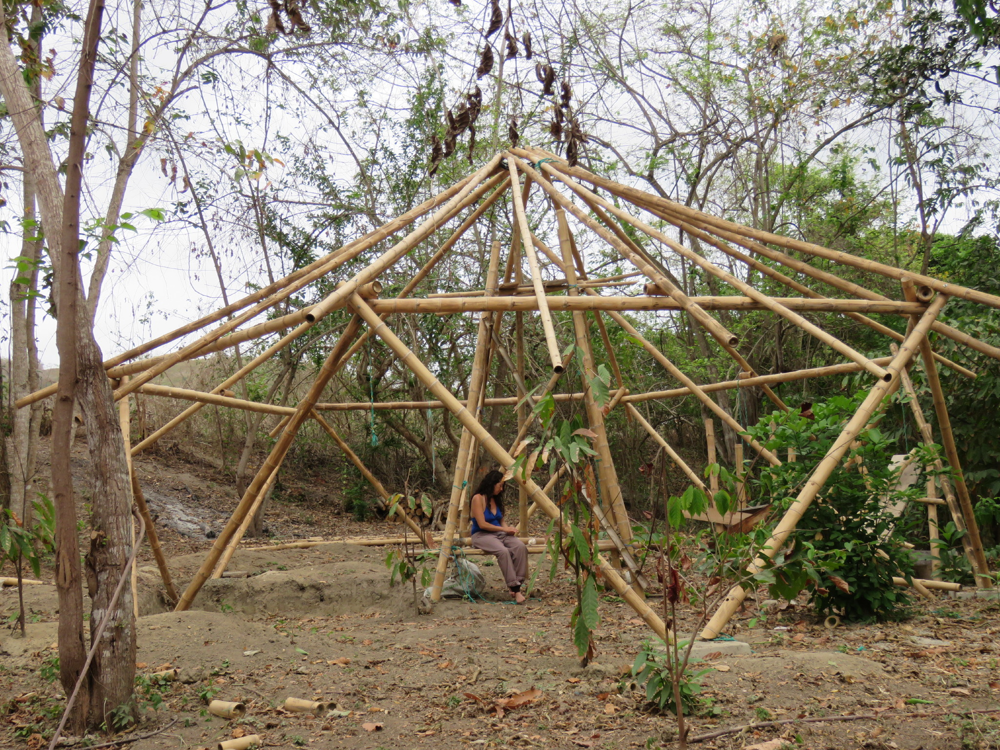

REGENERACIÓN ECOSOCIAL POST TERREMOTO RAMBUCHE
El 16 de abril de 2016, Ecuador se vió involucrado en una de las peores catástrofes naturales de las últimas décadas provocada por un sismo que, con intensidad de 7.8 grados, destruyó importantes zonas urbanas y rurales dejando una población devastada social y económicamente.
La provincia de Manabí, en Ecuador, es poseedora de una herencia cultural privilegiada, recursos productivos diversos y una población orgullosa y pujante, tiene todas las condiciones para resurgir con mayor ímpetu que nunca con el uso de tecnología ecológica, construcción natural, restauración social, económica y ambiental y participación activa de la población local durante todo el proceso de intervención.
CENTRO COMUNITARIO DE REGENERACIÓN ECOSOCIAL
Gracias al apoyo de LUSH a través de su programa CHARITY POT podemos construir el centro comunitario que servirá como punto de encuentro y capacitación en formas sustentables de reconstrucción y regeneración sustentable, metodologías de gestión y gobernanza colectiva y economía solidaria local.
Contará con ejemplos de bioconstrucción y diseño permacultural en la siguiente infraestructura.
Para construir esto trabajaremos en conjunto con la comunidad de Rambuche, y estaremos abiertos a recibir la solidaridad de manos voluntarias dispuestas a aprender y compartir, si estas interesado en ser parte de este esfuerzo colaborativo puedes dirigirte a nuestra sección voluntarios AQUI
También ofreceremos talleres de construcción con caña guadua, en los que con tu inscripción no solo accedes al conocimiento y a una gran experiencia sino que apoyas a que la comunidad tenga este centro y se capacite en formas sustentables de reconstrucción y regeneración, puedes ver el detalle en CAPACITACIONES
Para saber más del proyecto puedes descargar nuestra presentación AQUI
Download HereILALO
El volcán Ilaló, declarado Reserva Natural desde hace 20 años, es un lugar de gran importancia natural, histórica, cultural y arqueológica en el que residen 11 comunas y más de 20 barrios y cuyo componente social cuenta con interesantes características que aportan a la generación de vínculos y procesos de relación sustentable con el entorno natural. Así mismo, enfrenta agudas problemáticas por el crecimiento de la mancha urbana de Quito y la deforestación progresiva que ha sufrido desde hace 50 años, lo que ha provocado que más de 50 ojos de agua se sequen y con eso el sistema hidrológico del volcán que es el sostén de los valles se vea afectado.
Ecopoblaciones del Ilalo es un programa ambiental, social, cultural y económico que impulsa la protección y restauración ambiental del Volcán Ilaló a través de la implementación de ecotecnología, agroecología, restauración, facilitación de gestión colectiva y comunicación. Así mismo, genera procesos sociales que canalizan las herramientas, reducen la presión sobre las áreas protegidas participan en la co-creación en conjunto con las autoridades de un modelo de gestión local sustentable.
La implementación, distribución y capacitación de y en tecnologías ecológicas adecuadas y la facilitación de procesos comunitarios y culturales generarán acciones e interrelaciones que propicien el desarrollo de sistemas sostenibles, regenerativos y no contaminantes, en la provisión de energía, mantenimiento del agua, manejo de residuos, soberanía alimentaria y regeneración del aire.
Ecopoblaciones del Ilalo ha sido trazado, de manera programática y con avances progresivos, para articular iniciativas y procesos comunitarios de carácter sostenible que ya hay en este sector, procurar su visibilización y la propagación equitativa, mediante estrategias corporativas y sociales.
REGENERACIÓN ECOSOCIAL POST TERREMOTO RAMBUCHE
El 16 de abril de 2016, Ecuador se vió involucrado en una de las peores catástrofes naturales de las últimas décadas provocada por un sismo que, con intensidad de 7.8 grados, destruyó importantes zonas urbanas y rurales dejando una población devastada social y económicamente.
La provincia de Manabí, en Ecuador, es poseedora de una herencia cultural privilegiada, recursos productivos diversos y una población orgullosa y pujante, tiene todas las condiciones para resurgir con mayor ímpetu que nunca con el uso de tecnología ecológica, construcción natural, restauración social, económica y ambiental y participación activa de la población local durante todo el proceso de intervención.

SECOYA RESCATE CULTURAL
Proximamamente...
La Comunidad Siekopai Secoya Remolino, es una comunidad indígena con raíces ancestrales y fuertes ubicada en una zona de altímsima biodiversidad cerca de La Reserva del Cuyabeno en la Amazonía Ecuatoriana. Cuenta con una población de alrededor de 200 personas entre ellas grandes curanderos y sanadores hombres , mujeres y niños herederos de una sabiduria milenaria que al momento se encuentra en peligro de extinción. No solo por la explotacion petrolera y las plantaciones de palma africana que lo rodean, lo que los ha dezplazado ya varias veces, si no que actualmente se ve amenazada por la construcción de una carretera que afectará y cambiará su destino para siempre.
Ecopoblaciones quiere disenar un plan de mitigación de impactos para la juventud con la construccion de un centro cultural y ambiental que informe y brinde herramientas para la poblacion frente al inminente cambio. Fortalecer su actividad ecoturistica y mejorar sus sistemas productivos y prácticas ambientales.
PROGRAMA DE VOLUNTARIADO
Recibimos el trabajo voluntario de personas dispuestas a aprender de la cultura local, del trabajo colaborativo y tener una experiencia de crecimiento interno, personas que quieren ser parte de la regeneración de la tierra y de la protección de lugares sagrados y claves para el sustento de la vida durante la construcción del centro de permacultura en Rambuche estaremos trabajando con bioconstrucción en bambú, permacultura, trabajo social y participativo, gestión emocional y organizativa, recuperación de la identidad mediante arte, reforestación de bosque.
Al momento nuestra organización y la comunidad no cuentan con financiamiento para mantener a los voluntarios por lo que requerimos de personas que puedan autofinanciar su participación con un costo de 50 USD semanales lo que incluye alimentación y hospedaje en carpa en el Fundo La Paz, finca que viene recibiendo más de 10 anos voluntarios para la colaboración en reforestación de la Reserva La Victoria que está ubicada en Rambuche.
Si te interesa ser parte de esta tribu regenerativa, puedes llenar la aplicación y submitir
- NOMBRE
- FECHA DE NACIMIENTO
- OCUPACIÓN
- TALENTOS
- IDIOMAS
- EXPERIENCIA PREVIA
- PORQUÉ ME INTERESA SER PARTE (CARTA DE INTENCIÓN)
- DISPONIBILIDAD DE TIEMPO
- REFERENCIAS PREVIAS